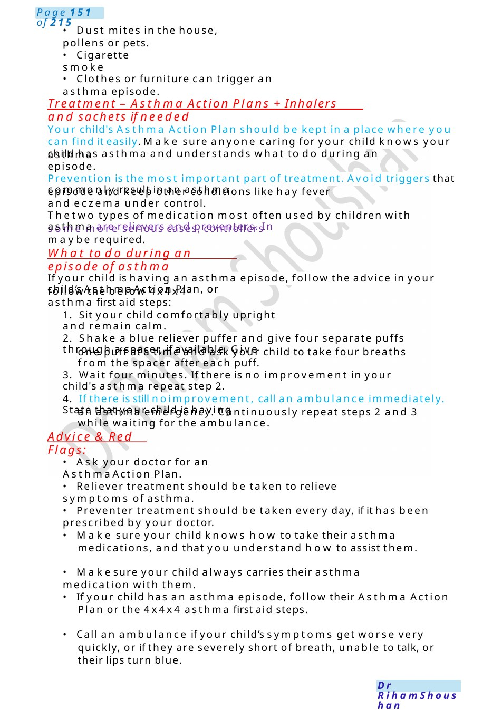
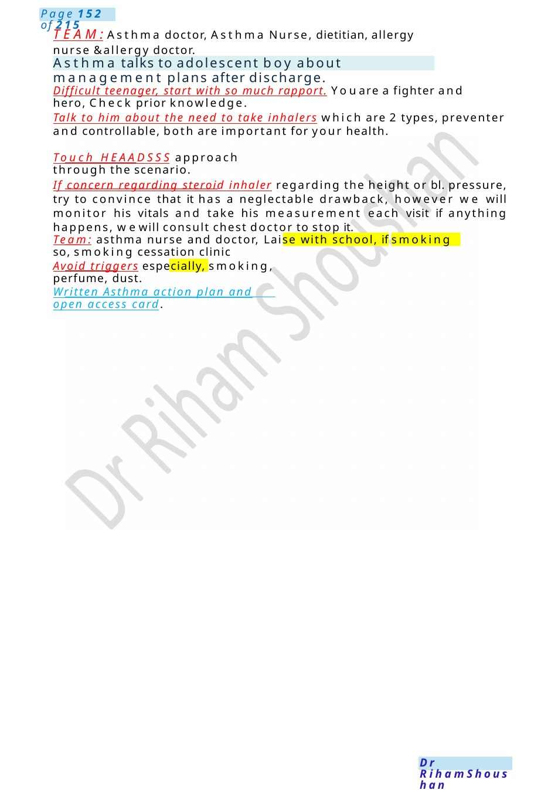

Asthma
will often go on for two to three days, and sometimes longer. In a severe episode of asthma: − Your child might struggle to breathe, become very distressed, exhausted or even limp
Scenario Summary
will often go on for two to three days, and sometimes longer. In a severe episode of asthma: − Your child might struggle to breathe, become very distressed, exhausted or even limp
Full Original Scenario

Asthma
Asthma Breaking Bad News or Early asthma
will often go on for two to three days, and sometimes longer. In a severe episode of asthma:
− Your child might struggle to breathe, become very distressed, exhausted or even limp
− Youmaysee deep sucking movements at their throat or chest as they try to breathe.
seem to be lacking energy. Wheezing – when your child’s breathing sounds like whistles.
Signs and symptoms of asthma
of their asthma.
episodes when they happen.
active lives. Children with asthma should have an Asthma Action Plan that will tell you how
childhood.
develop asthma. About one in five children will be diagnosed with asthma sometime during
and problems with breathing.
What is asthma: Asthma is a commoncondition caused by narrowing of the small air passages in the lungs. The narrowing happens when air passages become swollen and inflamed, causing more mucus to be produced. In addition, the muscle bands around the air passages become tighter. These changes make it harder for air to get in and out of the lungs (especially out), and cause wheeze, cough
− Wheezing is very commonin babies and toddlers, but not all children with wheeze go on to
− With the right treatment, nearly all children with asthma will be able to join in sport and lead
to prevent asthma episodes (sometimes called asthma attacks) and how to manage asthma
− Asthma can be unpredictable and affects each child differently. Manychildren will grow out
Breathing problems – your child might be out of breath at rest, feel tightness in the chest, have to workhard to breathe, or be unable to complete full sentences due to feeling out of breath. Theymight
Coughing – this usually happens at night or early hours of the morning; whenthe weather is cool and during exercise. Coughalone does not meanasthma. these symptomsof a mild asthma episode. which
Call an ambulance immediately in a severe episode of asthma.
What causes asthma
The cause of asthma is often not known. It can run in families, and some children's asthma is related to other conditions, such as eczema, hay fever and allergies.
There are many things that can trigger an asthma episode. The most commontrigger is a respiratory infection caused by a virus, such as a cold. Other commonasthma triggers include:
- Exercise
- Changes in the weather or windy conditions

Advice &Red Flags:
- Ask your doctor for an Asthma Action Plan.
an asthma emergency. Continuously repeat steps 2 and 3 while waiting for the ambulance.
3. Wait four minutes. If there is no improvement in your child's asthma repeat step 2.
one puff at a time and ask your child to take four breaths from the spacer after each puff.
1. Sit your child comfortably upright and remain calm.
follow the below 4x4x4 asthma first aid steps:
What to do during an episode of asthma
some more serious cases, controllers maybe required.
episode and keep other conditions like hay fever and eczema under control.
asthma episode.
Treatment – Asthma Action Plans +Inhalers and sachets if needed
- Dust mites in the house, pollens or pets.
- Cigarette smoke
- Clothes or furniture can trigger an asthma episode.
Your child's Asthma Action Plan should be kept in a place where you can find it easily. Make sure anyone caring for your child knows your child has asthma and understands what to do during an
Prevention is the most important part of treatment. Avoid triggers that commonly result in an asthma
Thetwo types of medication most often used by children with asthma are relievers and preventers. In
If your child is having an asthma episode, follow the advice in your child’s Asthma Action Plan, or
2. Shake a blue reliever puffer and give four separate puffs through a spacer, if available. Give
4. If there is still noimprovement, call an ambulance immediately. State that your child is having
- Reliever treatment should be taken to relieve symptoms of asthma.
- Preventer treatment should be taken every day, if it has been prescribed by your doctor.
- Make sure your child knows how to take their asthma medications, and that you understand how to assist them.
- Makesure your child always carries their asthma medication with them.
- If your child has an asthma episode, follow their Asthma Action Plan or the 4x4x4 asthma first aid steps.
- Call an ambulance if your child’s symptoms get worse very quickly, or if they are severely short of breath, unable to talk, or their lips turn blue.

Asthma talks to adolescent boy about management plans after discharge.
TEAM:Asthma doctor, Asthma Nurse, dietitian, allergy nurse &allergy doctor.
Difficult teenager, start with so much rapport. Youare a fighter and hero, Check prior knowledge.
Talk to him about the need to take inhalers which are 2 types, preventer and controllable, both are important for your health.
Touch HEAADSSS approach through the scenario.
If concern regarding steroid inhaler regarding the height or bl. pressure, try to convince that it has a neglectable drawback, however we will monitor his vitals and take his measurement each visit if anything happens, wewill consult chest doctor to stop it.
Team: asthma nurse and doctor, Laise with school, if smoking so, smoking cessation clinic
Avoid triggers especially, smoking, perfume, dust.
Written Asthma action plan and open access card.

Ventolin Inhaler Device
Explanation: a device prescribed to you by the doctor, composed of face mask, valve, chamber and rubber ending.
How to use it: It is the first time to use the inhaler or did not use it for very long time, it is advisable to make a puff in the air to make sure it is working. After that, you will shake the inhaler very well , meanwhile you will ask him breath in and out very slowly, after that you will fit the mask on child’smouth and nose very tightly and you will put the inhaler in the rubber ending, you will make a puff and you will ask himto breath in and out 5 times as long as he is comfortable ( if mouth piece instead of mask, you will put the mouth piece in between his teeth and seal it with lips.
If it is prescribed 2 puffs, it is better to wait for 30 seconds before repeating the cycle again.
You should clean it by soaking it in a warmwater with mild detergent for 15 minutes and then rinse it with water, do not scrap it from inside and do not wipe it as it will decrease the efficacy of the spacer and if it is broken, cracked, scratched you should replace it, otherwise from 6 to 12 months its validity according to howfrequent he uses it Andhe should rinse his mouth with water to prevent the local drawbacks of steroids, and he should avoid anything that worsen his symptoms.